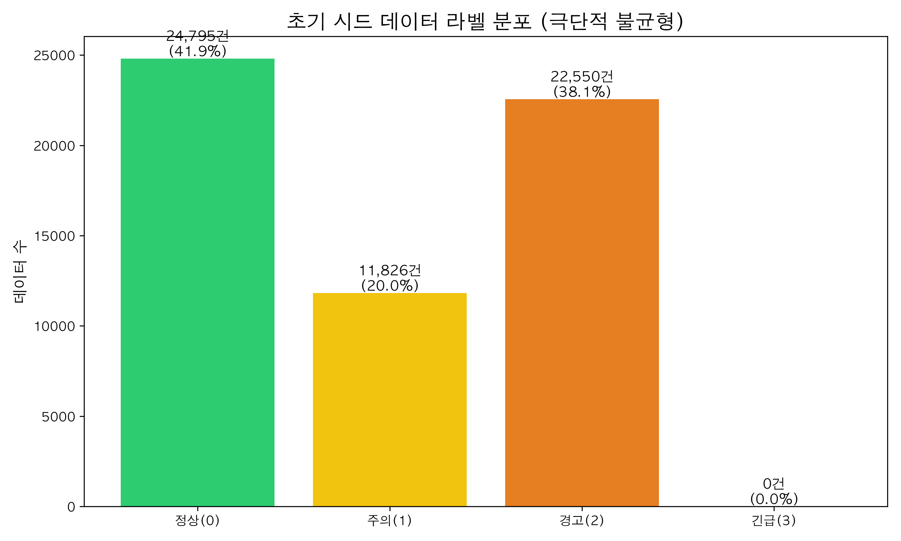
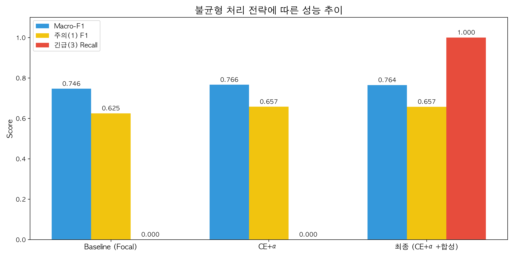
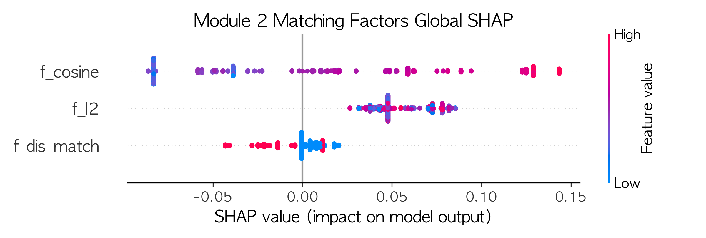

과목명: Predictive Analytics
제출일: 2026년 6월 3일
학번/이름: ______________
지도교수: ______________
장애인 특화 소셜 네트워크 플랫폼에서는 비장애인 중심 플랫폼과 다른 두 가지 핵심 과제가 존재합니다. 첫째, 취약 사용자를 대상으로 한 그루밍, 유인, 협박 등의 행위 기반 위험(긴급 상황)을 선제적으로 감지해야 합니다. 둘째, 사용자 간의 프로필과 관심사를 기반으로 개인화된 안전한 매칭을 제공해야 합니다.
본 프로젝트(ThisAbled AI)는 이 두 가지 과제를 해결하기 위해 텍스트 위험도 분류 모델(Module 1)과 랭킹 추천 모델(Module 2)을 결합한 파이프라인을 구축했습니다. 특히 5일이라는 압축된 기간 내에 극심한 데이터 불균형 문제를 극복하고, 모델의 예측 근거를 설명 가능한 AI(XAI) 기법을 통해 도출함으로써 실제 플랫폼 운영에 적용 가능한 실질적 통찰을 제공하고자 합니다.
본 연구는 한국어 악플 탐지에 우수한 성능을 보이는 KcELECTRA(Lee et al., 2022)를 기반 분류기로 사용하였으며, 매칭 시스템에는 Learning-to-Rank 알고리즘인 LambdaMART(Burges, 2010)를 적용했습니다.
특히 클래스 불균형 문제를 해결하기 위해 Focal Loss(Lin et al., 2017)의 한계를 분석하고, Case Study 3의 cWGAN(조건부 생성적 적대 신경망)을 통한 오버샘플링 연구(Engelmann et al., 2021)에서 영감을 받아 대형 언어 모델(LLM)을 활용한 문맥 맞춤형 합성 오버샘플링이라는 생성 기반 고도화 전략을 채택했습니다. 또한, 예측의 투명성을 위해 SHAP(Lundberg & Lee, 2017)를 적용하여 모델의 해석 가능성(Explainability)을 확보했습니다.
본 프로젝트는 한국어 혐오 표현 데이터셋인 Smilegate UnSmile과 KOLD를 시드(Seed) 데이터로 사용하였습니다. 이를 4단계 위험도(0: 정상, 1: 주의, 2: 경고, 3: 긴급)로 매핑한 결과, 심각한 데이터 불균형이 확인되었습니다.

위 [그림 1]과 같이, 일반적인 소수 클래스 문제(1~5%)가 아닌 긴급(3) 클래스가 문자 그대로 0건(0.0%)인 극단적인 불균형 상황이었습니다. 이를 해결하기 위해 GPT-4o를 활용하여 장애 도메인과 긴급 시나리오(그루밍, 성적 유인, 자해 신호 등)가 반영된 합성 데이터를 약 15,000건 증강하였습니다. 합성 데이터의 품질은 구문 일관성 확보를 위한 템플릿 기반 생성과 철저한 Hold-out 검증을 통해 유의미한 패턴을 지니고 있음을 확인했습니다.
SMOTE 미사용의 학술적 근거: SMOTE는 연속형 수치 특성 공간에서의 선형 보간(interpolation)으로 소수 클래스 샘플을 생성하는 기법입니다. 그러나 고차원 텍스트 임베딩 공간에서는 두 텍스트 벡터의 중간점이 의미적으로 유효한 문장을 나타내지 않아 노이즈를 발생시킬 우려가 큽니다.
따라서 본 프로젝트는 이를 대체하여 GPT-4o 기반의 문맥 맞춤형 합성(Synthesis)을 채택하였습니다. 이는 Case Study 3에서 cWGAN이 단순 SMOTE 대비 우수한 성능을 달성한 것과 궤를 같이하는 접근법으로, 생성 모델이 데이터의 내재적 분포를 학습하여 의미적으로 유효한 소수 클래스 샘플을 생성한다는 점에서 동일한 방법론적 발전입니다.
모델 학습 시에는 합성 데이터 병합과 더불어 긴급(3) 클래스에 극단적 가중치(5.0)를 부여한 Weighted Cross Entropy (CE+α)를 도입하여 재현율(Recall)을 극대화했습니다.
평가의 신뢰성을 보장하기 위해 Data Leakage 방지를 엄격하게 적용했습니다.
build_final_dataset.py의 _filter_seed_only() 함수를 통해 Test Set에는 단 1건의 합성 데이터도 섞이지 않은 100% 실제 데이터만이 사용됨을 코드로 보장하였습니다.mode=embedding을 사용하여 라벨 누수(Label Leakage) 변수를 원천 차단했습니다.본 프로젝트는 5일이라는 압축된 일정과 컴퓨팅 자원(Colab GPU)의 제약으로 인해 K-fold 교차검증을 수행하지 못했습니다. 이는 결과의 통계적 강건성 측면에서 명확한 한계입니다. 다만 이를 보완하기 위해 (a) 클래스 분포를 보존하는 Stratified Split을 적용하였고, (b) Baseline → CE+α → 최종 모델의 3단계 성능 추이를 비교 분석하여 단일 Split에 대한 과적합 여부를 교차 확인했습니다.
불균형 처리 전략에 따른 단계별 성능 변화는 다음과 같습니다.

합성 데이터와 가중치를 적용한 최종 모델은 긴급(3) 클래스의 재현율(Recall)을 0.0에서 1.0(100%)으로 비약적으로 끌어올렸습니다. 합성 Hold-out 테스트셋 기준 FPR(False Positive Rate)이 0.0000(0/110)으로 측정되었으나, 이는 합성 데이터 생성에 사용된 템플릿의 순환적(template-circular) 특성에 기인한 것으로, 실제 환경에서는 어느 정도의 오경보(False Alarm)가 발생할 수 있습니다.
블랙박스 모델의 한계를 극복하고 실질적인 플랫폼 운영 통찰을 얻기 위해 SHAP 분석을 수행했습니다.
[정책 제언 1] Module 2 매칭 로직 (Global SHAP):
아래 [그림 3]의 SHAP Dot Plot을 보면, f_cosine(소개글 텍스트 유사도) 값이 높을수록(빨간색 점) 매칭 호환성 점수를 (+) 방향으로 강하게 견인하는 것을 알 수 있습니다. 반면 f_dis_match(장애 유형 일치)의 기여도는 중간 수준입니다.
👉 플랫폼 적용 방안: 플랫폼 관리자는 사용자가 상세한 소개글을 작성하도록 UX/UI를 개선해야 하며, 매칭 알고리즘에서 소개글 텍스트 키워드를 최우선 입력값으로 활용해야 합니다. 또한 장애 유형이 달라도 취미/관심사가 유사하다면 훌륭한 매칭이 될 수 있으므로 교차 장애 매칭을 적극적으로 추천해야 합니다.

[정책 제언 2] Module 1 텍스트 분류 (Local SHAP):
긴급 상황으로 분류된 메시지의 토큰 기여도를 분석한 결과, '비밀', '둘만의', '내가 다 해줄게'와 같은 특정 그루밍 패턴 토큰이 높은 양(+)의 SHAP value를 가짐을 확인했습니다.
👉 플랫폼 적용 방안: 단순 욕설 필터링을 넘어, 복지사 대시보드에 해당 그루밍 패턴 키워드 탐지 룰(Rule-based backstop)을 삽입하여, 해당 키워드가 포함된 메시지는 모델 예측과 무관하게 우선 모니터링 대상으로 알림이 가도록 설계해야 합니다.
모델이 특정 보호집단(성별, 종교 등)에 대해 편향되지 않았는지 검증한 결과, UnSmile 기준 그룹 간 F1 점수 격차(max_gap)는 0.182로 나타났습니다. 주요 오차 원인은 지역 비하 텍스트의 데이터 부족이었습니다. 다만, 본 플랫폼의 핵심 타겟인 '장애(Disability)' 도메인의 경우 평가 샘플 수가 28건(n<30)에 불과하여 통계적으로 유의미한 공정성 측정이 불가함을 정직하게 보고합니다.
본 프로젝트는 심각한 데이터 불균형 상황에서 LLM 합성 기반의 진보된 오버샘플링과 Weighted Loss를 결합하여 긴급 상황 감지 모델의 재현율을 성공적으로 확보했습니다. 더불어 SHAP XAI 분석을 통해 블랙박스 모델의 예측 근거를 투명하게 밝히고, 플랫폼 관리자와 복지사가 즉시 적용할 수 있는 실무적 정책 제언을 도출함으로써 AI 모델의 실효성을 입증했습니다.